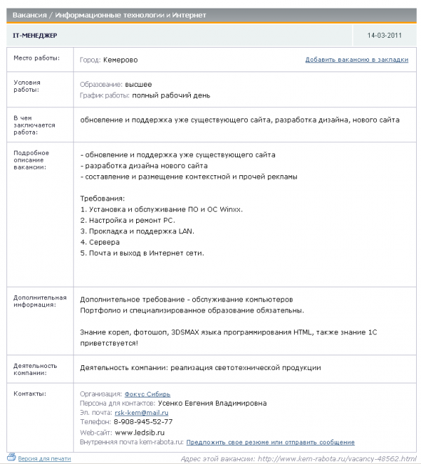
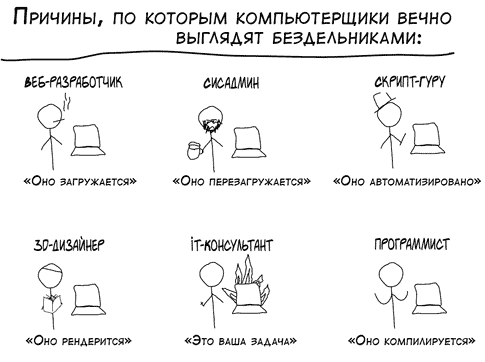

Явный признак того что получишь не то что нужно — желать не знать чего. Компания Фокус-Сибирь, успешно осуществляющая продажи светотехники в Кемерово, в том числе и с помощью интернета, опубликовала на одном из интернет-сайтов вакансию.

Видимо все-таки понимая, что нет понимания в том, кто именно требуется вакансия названа IT-менеджер. На самом деле исходя из требований для работы в офисе требуется такой чувак чтобы с компьютерами делал всякие штуки, которые мы не умеем и разбираться не хотим, но ведь не напишет солидная организация такого. IT-менеджер звучит солидно.
Полный рабочий день будущему айтименеджеру предстоит заниматься обновлением существующего сайта, немножко разрабатывать дизайн нового, немножко размещать контекстную рекламу.
От айтименеджера будут требовать устанавливать операционные системы, ремонтировать PC, лазить в пыли с патчкордом прокладывая LAN. Периодически будут требовать сервера.
Хотя специализированное образование обязательно, если заинтересовались вакансией, можете смело забить на этот пункт. В Кемерово негде получить специализированное образование для разработки дизайна сайта и его обслуживания.

Отличным подспорьем в работе станет знание 3DSMAX (видимо вас иногда попросят рендерить светильники). Знание 1С тоже лишним не будет (это же экономия на услугах специализированных фирм). Ну и совсем некуда без знания HTML, который на самом деле никаким языком программирования не является.
Уверен, что при таком диапазоне требований, зарплата должна быть ОтПолСта. Но в самом объявлении об этом кокетливо умалчивается.
Желаю компании «Фокус-Сибирь» творческих сотрудников и понимания специфик. Ищите вместо одного человека минимум трёх.
Один будет заниматься сайтами, другой железом и софтом, третий 1С. А 3DS MAX можно и самому на досуге поизучать.